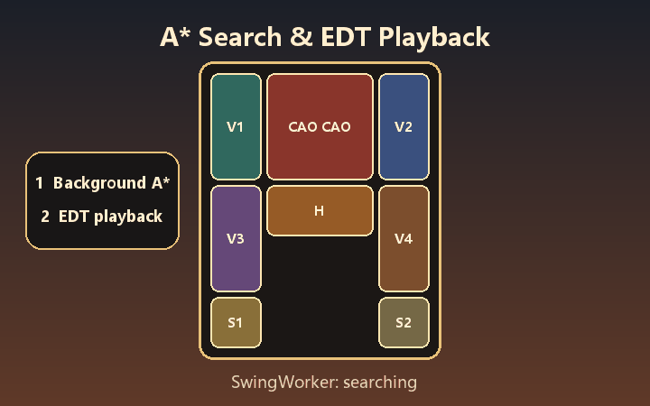
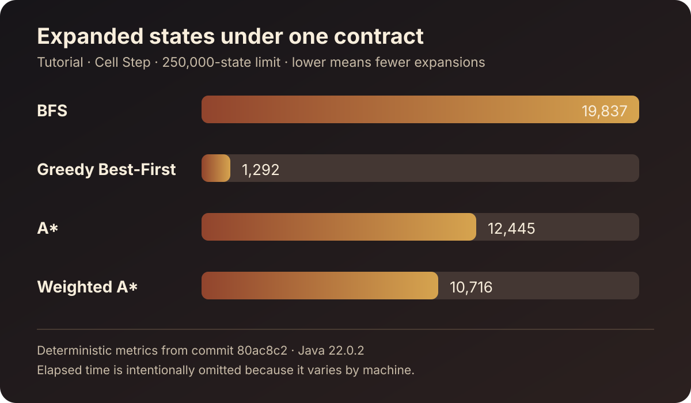

Search Overview
Follow exact expanded, discovered, frontier, solution, and elapsed metrics while the experiment runs off the Swing event thread.
Java 22+ · Swing · Explainable search
KlotskiPuzzle combines a playable Huarong Dao board with deterministic BFS, Greedy Best-First, A*, and Weighted A* experiments. See what the solver expands, why candidates are accepted or rejected, and how the final path moves the board.
Windows portable package includes its own runtime. Source builds require Java 22+ and Maven 3.9+.

Actual project demo · original generated assetsReproducible evidence on current main
The checked-in report runs BFS, Greedy Best-First, A*, and Weighted A* over the same tutorial puzzle, Cell Step rule, 250,000-state limit, and deterministic tie-breaking. It exports TSV plus four versioned JSON Experiment Records instead of relying on a hand-copied timing table.
This command was added after v2.0.0-beta.1. The Release remains the current Windows and JAR preview; the report belongs to current main.

One result, three levels of explanation
Follow exact expanded, discovered, frontier, solution, and elapsed metrics while the experiment runs off the Swing event thread.
Review an expanded board, its candidate moves, their scores, and the explicit reason each candidate entered or left consideration.
Step backward, play, pause, advance, or jump through a validated solution path, then export a versioned JSON Experiment Record.
Built for algorithm and Java learners
Use one repository to study multi-cell puzzle modeling, shared human/solver movement rules, deterministic priority ordering, bounded search, background work, EDT-safe playback, bilingual Swing UI, persistence boundaries, and JUnit verification.
Explore the architecture →git clone https://github.com/44-99/KlotskiPuzzle.git
cd KlotskiPuzzle
mvn clean verify
mvn exec:javaTransparent preview boundary
The v2.0.0-beta.1 preview includes the interactive walkthrough, inspector, replay, and JSON export. Current main adds a reproducible CLI comparison. Puzzle import/export, complete compressed traces, interactive side-by-side comparison, HTML reports, and broader responsive Play Mode work remain on the public roadmap.
View roadmap简体中文
KlotskiPuzzle 面向算法学习者、Java 学生和初级开发者。你可以运行 BFS、贪心最佳优先、A* 与加权 A*，查看搜索概览、检查候选状态为什么被接受或拒绝、逐步回放最终解法，并导出可复查的 JSON 实验记录。